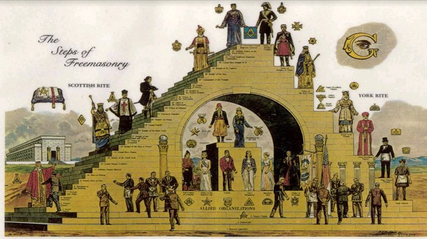
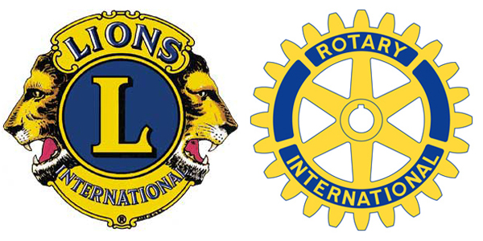
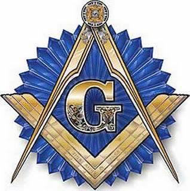

Rencana Jangka Panjang Zionisme Internasional Untuk Menghancurkan Ummat Kristen dan Ummat Muslim se Dunia “Protocols of Zion” yang sudah lama menjadi ‘kitab suci” Zionisme Internasional, selama ini dipahami sebagai sumber inspirasi kaum Yahudi untuk menata dunia sesuai dengan keinginannya, yaitu Dunia yang pada akhirnya hanya beragama satu, agama Yahudi. Inti ajaran agama Yahudi adalah pemujaan materi atau dikenal dengan istilah materialisme. Protokol itu pertama kalinya dibuat tahun 1895 di Basel-Swiss oleh pemimpin Zionis saat itu, Theodore Hertzel. Dokumen itu berisi 24 pasal (24 protocols). Tadinya sangat dirahasiakan sekali, tapi kemudian bocor dan sampai ke tangan pendeta orthodox Rusia, Sergey Nylos, yang menterjemahkan ke dalam bahasa Rusia pada tahun 1921. Seorang wartawan Inggris,Victor E Mersden, kemudian menterjemahkannya kembali kedalam bahasa Inggris dengan judul “The Protocols of The Learned Elders of Zion” pada tahun 1917. Berikut terjemahannya dalam versi Indonesianya.
PROTOCOLS KE 1: Semboyan kita (kita disini maksudnya: zionisme/warga yahudi se dunia, pen) hanya ingin mencapai tujuan dengan kekuatan militer, kecanggihan teknologi perang, dan memasyarakatkan hidup bersenang-senang mengejar popularitas. Pandangan hidup kita hanyalah mampu menindas terlebih dahulu, kemudian bertanggung-jawab dalam suatu persoalan, atau berbuat jahat dan memasang jerat halus demi kepentingan kita
PROTOCOLS KE 2: Kita harus berusaha sekuat tenaga agar pertempuran yang terjadi antara dua negara tidak menjalar ke negara lain. Sehingga peperangan itu masih bisa dikendalikan, agar pihak kita dapat menguasai.
PROTOCOLS KE 3: Kini beban kita tinggal menerobos terowongan yang pendek, setelah itu daerah yang dikuasai oleh ular (lambang ‘Free Masonry’, organisasi bawah tanah dari gerakan Zionisme Internasional, pen) akan kita kunci. Bila sudah dikunci, berarti semua benua eropa akan tergenggam dalam tangan kita.
PROTOCOLS KE 4: Gerakan ‘ Free Masonry’ akan melaksanakan tujuan-tujuan kita ini, dan sebagai penghalang bagi siapa saja yang akan membongkar program kita.Gerakan ‘Free Masonry’ akan mampu menghapus keyakinan bertuhan di tengah masyarakat Kristen, dan diganti dengan teori matematika dan teori relativitas.
PROTOCLOS KE 5: Kita harus mencemarkan nama pendeta dan ulama. Agar keduanya dipandang hina oleh gelandangan dipinggir jalan.Ada suatu langkah yang mampu membikin opini umum, yaitu kita harus mengajukan berbagai pandangan yang dapat menggoyahkan keyakinan-keyakinan sebelumnya yang sudah tertanam di hati dan pikiran masyarakat. Kalau usaha ini belum mendapatkan perhatian, maka masyarakat harus diberikan pandangan lagi yang secara sosial dapat diterima.
PROTOCOL KE 6: Kita harus mampu mengatur penimbunan kekayaan yang amat besar yang dimiliki oleh orang-orang non-yahudi. Administrasinya harus dapat mengikis habis kekayaan itu secara berangsur-angsur. Kita harus menggunakan segala cara agar Lembaga pemerintah Internasional (semacam PBB, IMF, World Bank sekarang ini, pen) memiliki daya polularitas yang tinggi, sehingga dikenal oleh seluruh umat manusia yang hidup di dunia ini. Diusahakan agar bangsa yang patuh kepada lembaga ini merasa memperoleh perlindungan yang terjunjung tinggi harkat bangsanya.
PROTOCOLS KE 7: Kita harus berani mendorong masyarakat Eropa dan selalu membantu menyebarkan isue buruk dan berbau permusuhan dengan penduduk yang tinggal di benua lain. Kebijaksanaan ini memberikan dua keuntungan bagi kita. Sebab, mereka mengetahui bahwa kita mampu melahirkan revolusi atau membuat peraturan sesuai dengan kehendak mereka. Bila ada pemerintah yang ingin menghambat tujuan kita, maka diupayakan negara tetangganya merasa terancam, pada akhirnya mengakibatkan peperangan dua negara. Apabila dua negara bersatu untuk menghancurkan kita, maka kita harus berani menyatakan perang dunia.
PROTOCOLS KE 8: Pemerintah kita harus memahami bahwa kebudayaan suatu bangsa mempunyai peranan yang amat penting. Oleh karena itu pemerintah harus mampu menghimpun orang-orang senior seperti pengarang, ahli hukum, eksekutif, politikus, administrator yang telah lama duduk di sekolah kita dan telah ditempa dengan dokrin Yahudi.
PROTOCOLS KE 9: Kita harus dapat menguasai pejabat-pejabat non-Yahudi yang mengatur administrasi, untuk dirombak sebagaimana yang kita harapkan. Selain itu harus menempatkan orang-orang kita dalam lembaga pengatur negara. Kita berusaha agar administrasi suatu negara berjalan timpang. Kita banyak mendudukkan wakil-wakil dalam tubuh Legislatif, dan ikut serta dalam pemilihan umum.
PROTOCOLS KE 10: Kita harus memecah-belah keluarga masyarakat non-Yahudi dan menghapus adat-istiadat, serta kebudayaan mereka. Kita berusaha untuk memperoleh setiap sarjana dan cendekiawan agar mau bergabung dengan barisan kita. Kita harus dapat mendirikan pemerintahan otokrasi yang mudah diatur menurut haluan kita. Hal itu bisa dijangkau apabila seluruh lembaga baik legislatif , eksekutif maupun yudikatif dipegang oleh orang-orang yang tidak segan-segan menerima uang siluman. Kepemimpinan tertinggi akan dipegang oleh agen-agen kita yang mampu menjalankan pemerintahan sesuai dengan petunjuk kita.
PROTOCOLS KE 11: Tuhan telah menghendaki keturunan Israel sebagai petualang dunia yang hidup di berbagai negara. Kalau dipandang sepintas hal itu merupakan sisi kelemahan Israel. Namun petualangannya harus dimanfaatkan untuk memperkokoh posisi kita dan dijadikan sebagai jembatan emas untuk menduduki singgasana kerajaan dunia. Pesta-pesta yang diadakan oleh gerakan ‘Free Masonry’ merupakan tempat komunikasi antara kelompok-kkelompok kita (sekedar info saja, yayasan ‘Lions Club’ dan ‘Rotary Club’ di seluruh dunia dikendalikan oleh orang-orang ‘Free Masonry’ ini, pen).
PROTOCOLS KE 12: Dominasi kita harus merambah surat kabar yang membawa misi partai. Selain itu kita harus mampu mengontrolnya sebelum berita itu diedarkan, agar tidak mengungkap misi kita. Segala berita yang akan disiarkan lewat radio harus melalui pengawasan kita. Buku-buku berbobot harus dikenakan pajak yang tinggi, sedangkan buku murahan tidak dikenakan pajak, agar para sarjana enggan menulis buku.
PROTOCOLS 13: Kita harus berusaha agar opini umum tidak mengetahui permasalahan sebenarnya. Kita harus menghambat segala yang mengetengahkan buah pikiran yang benar. Hal itu bisa dilakukan dengan memuat berita lain yang menarik di surat kabar. Agen-agen kita yang menangani sektor penerbitan akan mampu mengumpulkan berita semacam itu. Pandangan masyarakat harus kita alihkan kepada hiburan (dunia entertaiment, pen), seni dan olah raga.
PROTOCOLS KE 14: Diupayakan di dunia ini hanya satu agama, yaitu agama Yahudi (inti ajaran agama yahudi adalah pemujaan materi atau paham materialisme, pen). Oleh karena itu segala keyakinan lainnya harus dikikis habis. Kalau dilihat di masa kini, banyak orang yang menyimpang dari agama. Pada hakekatnya kondisi seperti itulah yang menguntungkan yahudi. Di masa akan datang masyarakat dunia akan berduyun-duyun memasuki agama Musa yang menundukkan mereka berada di bawah telapak kaki yahudi. Pada saat itu, suara kritikan hanya tertuju kepada agama selain yahudi. Orang tak akan berani menelanjangi agama kita. Karena rahasia yang terkandung dalam ajaran agama Yahudi sangat dalam, dan ajarannya selalu diperjuangkan oleh pendeta-pendeta kita. Segala karya tulis yang mengkritik agama kita tidak diperkenankan terbit dan tersebar di masyarakat. Kita terus berjuang menyebar-luaskan tulisan sastra picisan di masyarakat negara adidaya (contohnya sekarang ini novel Harry Potter?, pen).
PROTOCOLS KE 15: Agen-agen rahasia kita harus disebar ke seluruh dunia. Mereka adalah anggota organisasi di bawah tanah dan gerakan ‘Free Masonry’. Bila bisa berjalan dengan baik, kita akan mempunyai polisi rahasia yang bergerak ke seluruh penjuru dunia. Dari mereka kita mendapatkan data-data akurat untuk mengatur segala persoalan yang penting. Kita harus sering mengadakan pertemuan anggota ‘Free Masonry’ sebelum memegang kekuasaan yang sempurna. Setelah berkuasa, kita akan mampu memusnahkan semua gerakan non-Yahudi dengan cara licin sehingga orang tidak akan menuding kita. Diupayakan di dunia ini hanya satu agama, yaitu agama Yahudi (inti ajaran agama yahudi adalah pemujaan materi atau paham materialisme, pen). Oleh karena itu segala keyakinan lainnya harus dikikis habis.
PROTOCOLS KE 16: Kita harus berani tampil di tengah masyarakat dan berjuang memimpin universitas yang ada sekarang. Setelah itu, penulisan sejarah akan kita tinjau kembali, dan menyisihkan sejarah yang menghujat nama bangsa Yahudi. Kritikan dari orang non-Yahudi tidak begitu bahaya, tetapi yang perlu diwaspadai adalah pendidikan yang berjalan dengan kurikulum mereka sendiri (bukan meniru kurikulum kita). Maka usahakan pendidikan semacam itu harus dilenyapkan. Bila tidak mampu, ia harus dikucilkan dari masyarakat.
PROTOCOLS KE 17 : Kita selalu dituntut untuk mencemarkan nama baik pendeta dan ulama non-Yahudi, agar mereka terhina dimata rakyat. Dengan usaha ini dapat mengurangi misi perjalanan mereka yang menghambat perjuangan kita. Bila ada peluang yang baik, istana Paus akan kita runtuhkan dengan memakai orang lain yang akan menembak Paus di Vatikan. Bila ini terjadi, para penduduk dunia akan berduyun-duyun ke Vatikan, dan kita akan tampil seolah-olah menjadi pelopor penuntutan terhadap pelaku pembunuhan itu (usaha pembunuhan Paus pernah dilakukan tahun 1981, tapi gagal, pen). Cara seperti itu agar kita yang akan menduduki singgasana Paus. Dan yahudi akan menjadi Paus sejati dan kepala uskup Gereja Internasional.
PROTOCOLS KE 18: Di saat polisi menjaga keamanan negara dengan ketat, kita harus mampu mengadakan kerusuhan dan keonaran di masyarakat (departemen kepolisian di seluruh dunia selalu memperoleh bantuan Zionis Internasional untuk mendukung tujuan mereka, pen). Kemudian para penceramah diorganisir untuk menerangkan keadaan yang genting itu. Di saat itu kita dapat menemukan jalan keluarnya, sehingga masyarakat simpati kepada kita. Kebijaksanaan seperti ini akan kita gunakan secepatnya untuk memberikan perintah agar penjagaan semakin ditingkatkan. Peluang ini kita pakai untuk mengkoordinir para pendukung kita untuk mendapatkan tujuan.
PROTOCOLS KE 19: Politikus yang kita tangkap diusahakan tidak dianggap sebagai pahlawan, tetapi martabat mereka kita samakan dengan penyamun, pencoleng, pembunuh dan narapidana berat lainnya. Usahakan masyarakat menyamakan narapidana politik dengan kriminil agar masyarakat menilai jelek para politikus. Kita harus berusaha agar bantuan (hutang) luar negeri seakan-akan bantuan dalam negeri. Agar kekayaan negara yang hutang akan terus mengalir ke perbendahaaraan kita.

PROTOCOLS KE 20: Kita harus berusaha agar bantuan (hutang) luar negeri seakan-akan bantuan dalam negeri. Agar kekayaan negara yang hutang akan terus mengalir ke perbendahaaraan kita. Akal hewan bangsa non-yahudi tidak akan mengerti bahwa hutang kepada negara kapitalis akan menguras kekayaan negaranya sendiri. Sebab, bunga hutang itu akan diambil dari hasil bumi negaranya atau masukan keuangan lainnya. Sekarang kita telah menguasai kekayaan dunia dengan jalan memegang saham surat-surat berharga lainnya (inilah alasan pemaksaan dibukanya Pasar Modal dan Pasar Uang di negara-negara yang berhasil mereka “liberalisasikan ekonominya”, pen). Kita akan membentuk pemerintah yang hutang agar terus membutuhkan bantuan dari bank kita sehingga pemerintah negaranya akan tergenggam oleh kaum kapitalis.
PROTOCOLS KE 21: Kita akan mendukung pemerintahan di seluruh dunia dengan sejumlah besar ahli di bidang ekonomi. Itulah sebabnya ilmu pengetahuan Ekonomi merupakan ilmu utama yang diajarkan oleh orang Yahudi (hampir di seluruh negara di dunia, fakultas ekonomi selalu saja jumlahnya melebihi jumlah fakultas ilmu sosial dan exacta yang ada. Dan pelajaran ekonomi di SMA selalu memiliki bobot materi yang paling lengkap dibanding mata pelajaran lainnya, tak terkecuali di Indonesia saat ini, pen). Kita akan dibantu oleh bankir, industrialis, kaum yang bermodal, dan terutama para milyuner yang tak terhitung banyaknya. Karena segala sesuatu diatur dengan angka yang pasti.
PROTOCOLS KE 22: Emas selau memegang peranan terpenting, dan sekarang kita telah menguasainya dengan melewati beberapa usaha yang lama dan telah melintasi beberapa generasi. Oleh karena itu senjata ini harus mampu memainkan peranannya untuk menggapai tujuan kita dalam rangka menguasai dunia.Untuk membentuk perdamaian diatas planet ini, perlu menggunakan sedikit kekerasan, yang semuanya dapat dilaksanakan di bawah panji-panji Zionisme.
PROTOCOLS KE 23: Mula-mula yang kita lakukan untuk memperkokoh kekuatan kerajaan kita, yaitu harus melenyapkan yayasan dan organisasi yang dulu bergerak untuk membela kita. Sebab bila ia dibiarkan, akan menjadi membahayakan kerajaan kita. Kerajaan Israel akan menjadi kokoh atas kehendak Allah. Langkah pertama untuk menegakkan kerajaan itu adalah membasmi pikiran orang yang tidak berwawasan luas. Walaupun mereka dulu pernah dipakai tangga untuk mencapai tujuan kita yang mulia.
PROTOCOLS KE 24: Orang yang mengatur kerajaan kita harus dari keturunan Dawud (David), disamping tokoh-tokoh dari Zionis. Orang tersebut harus memiliki otak cemerlang, mampu mengendalikan hawa nafsunya, bisa bergaul dengan rakyat, bersih dari noda, berani berkorban untuk memenangkan kepentingan rakyat, lambang kejayaan, tangguh dan kharismatik ( figur dimaksud dalam keyakinan ummat Islam, disebut Dajjal, pen).